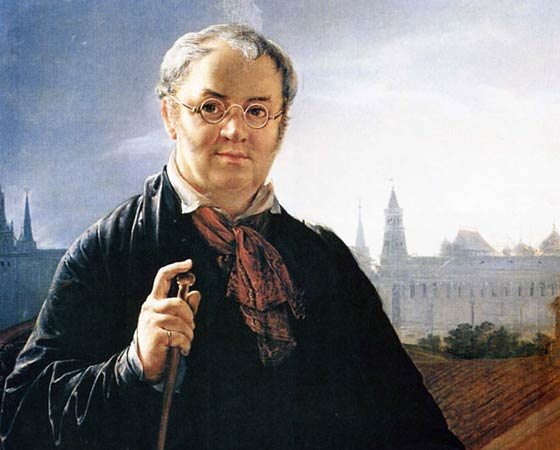

Василий Тропинин
Удивительная судьба была у великого русского хужожника-портретиста Василия Тропинина.
Он был рождён в семье крепостных графа Маркова в 1780 году и только в возрасте 47 лет получил право быть свободным человеком.
Ещё в детстве за маленьким Василием наблюдались склонности к рисованию, но граф отдал его учиться на кондитера.
Позже его всё-таки отдают в Императорскую академию, где он проявляет свой талант во всей его красоте. За свои портреты «Кружевница» и «Нищий старик» Василий Тропинин был удостоен звания академика.